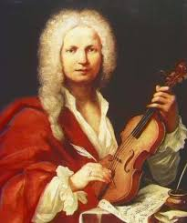

"An anonymous portrait in oils in the Museo Internazionale e Biblioteca della Musica di Bologna"
ANTONIO VIVALDI
SACERDOTE, COMPOSITOR, VIOLINISTA, EMPRESARIO DE OPERA

Linea de tiempo de Antonio Vivaldi
- 1678 Nace en Venecia, el 4 de marzo, Antonio Lucio Vivaldi. Hijo de Camilla Galicchio y Giovanni Battista Vivaldi, un destacado violinista de la capilla ducal de San Marcos.
- 1690 Fallece Giovanni Legrenzi, maestro de capilla, quien diera a Vivaldi lecciones de teoría musical y de órgano.
- 1693 Comienza su brillante carrera eclesiástica al recibir las órdenes menores en la iglesia de San Giovanni in Oleo.
- 1699 Es nombrado subdiácono.
- 1700 Asciende al diaconado.
- 1703 En marzo es ordenado sacerdote. En Septiembre ingresa como profesor de violín en el Ospedale delia Pietá.
- 1705 Hace imprimir sus primeras obras: “Sonatas de Cámara a tres”, para dos violines, bajo y clave (influencia de Arcángelo Corelli). Es nombrado maestro de composición en el Ospedale della Pietá, con un sueldo de 150 ducados.
- 1709 Da a conocer sus obras de Opus 2 (doce sonatas para violín y bajo continuo).
- 1712 Publica sus doce conciertos denominados “Estro Armónico” y la serie de conciertos titulados “La Stravaganza”.
- 1713 Finaliza sus contactos con Francisco Gasparini, autor de “Melodramas”, quien le habría dado a conocer las obras dé Corelli. Debuta en el género teatral con “Otone in Villa”.
- 1714 Es representada en varias oportunidades “Orlando Finto Pazzo” . Se estima que Bach conoce la música de Vivaldi a través de “estro armónico”.
- 1715 Gran éxito de su ópera “La Constanza trionfante degli amore e degli odi”.
- 1716 Es estrenada en el teatro Sant' Angelo “Arsilda regina di Ponto” . Aparecen las series de sonatas Opus 5, Opus 6 y Opus 7.
- 1718 Primer período de ausencia de Ospedale della Pietá. Trabaja para el príncipe de Hesse-Darmstadt, de Mantua. (Otro período cuya duración se ha estimado en once años y en fecha no determinada aún coincide con algunas giras efectuadas por Vivaldi al extranjero)
- 1720 Le Céne publica sus composiciones conocidas como “La Cetra”.
- 1725 Aparece publicada su obra “La Prueba de la Armonía y de la Invención”. Se publica su “Opus 8 (Las cuatro estaciones).
- 1727 Aparece “Te Deum”.
- 1728 Se publica en Viena “La Citara”.
- 1730 Composición de “Doce Conciertos para violín y Seis para flauta”.
- 1732 Estreno de su ópera “La Ninfa Fida”.
- Estreno de “La Olimpiada”.
- 1735 Aparecen “Adelaida”, “Griselda”, “Arístides”.
- 1737 Se ve envuelto en el incidente de Ferrara. El arzobispo de la ciudad le prohíbe su ingreso a ella a causa del "escándalo" que provoca su compañía de actores, músicos, cantantes de ambos sexos, incluidas las damas que solían acompañarlo en calidad de enfermeras.
- 1738 Viaja a Amsterdan invitado a los festivales que se realizan con ocasión del centenario del teatro de la ciudad.
- 1740 Ofrece Ospedalle de la Pietá la venta de algunas de sus composiciones. La propuesta es aceptada sólo parcialmente. Su nombre figurará por última vez en los archivos de La Pietá el 12 de Mayo, Aparecen publicadas seis “Sonatas para violoncello. Abandona Venecia y se establece en Viena.
- 1741 28 de julio, sumido en un completo abandono y en la total pobreza, muere en casa de la familia Satler, que lo había acogido en sus últimos días, Comienza el ostracismo.
- 1889 Luigi Torchi, en la Revista musicale italiana efectúa un juicio crítico e histórico de su obra.
- 1910 Amíntore Galli y Hugo Riemann efectúan los primeros intentos por destacar su obra, dando inicio a posteriores trabajos efectuados por Torrefranca, Combarier y Toni.
- 1913 Marc Pincherle presenta su interesante tesis sobre el nacimiento de Antonio Vivaldi.
- 1922 Wilhelm Altmann imprime el “Primer catálogo de las obras instrumentales de Antonio Vivaldi”.
- 1927 Roberto Foá adquiere algunos manuscritos de sus composiciones para donarlos a la Biblioteca de Turín.
- 1939 Del 14 al 18 de Septiembre se efectúa la Primera Semana Musical de Vivaldi, en Siena.
- 1941 Ingresa a la Biblioteca de Turín un valioso material impreso, que es destruido por las acciones bélicas de la segunda guerra mundial.
- Primera biografía completa publicada por el Instituto de Alta Cultura de Milán.
- 1945 Se publica un catálogo temático de sus obras.
- 1978 Tricentenario de su nacimiento. Su nombre ha logrado vencer la ingratitud y el olvido, y emerge como uno de los más grandes y originales genios de la música.